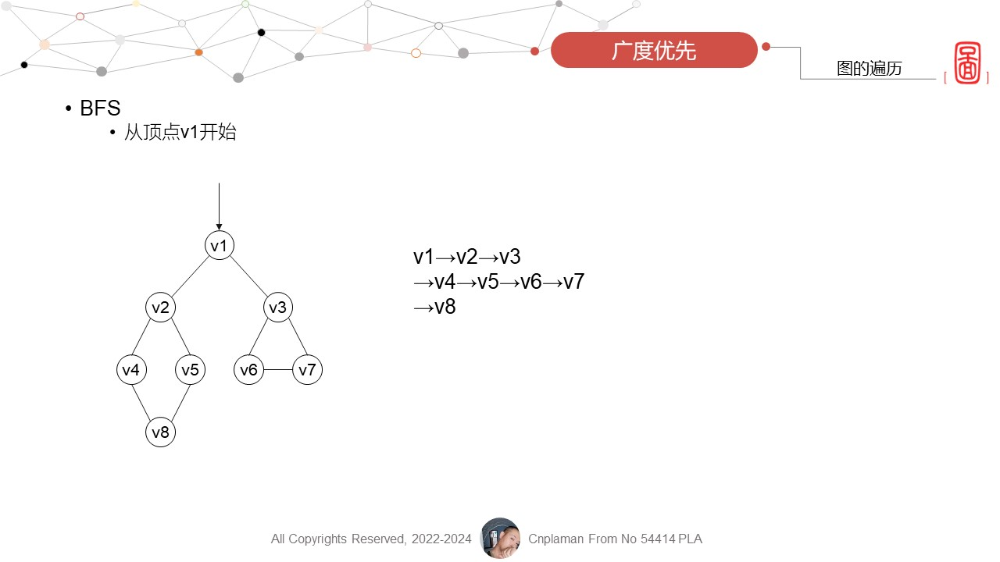

图的遍历
Graph Traverse
DFS
- 说明
- . 用于查找节点之间是否有路径
- 算法
- . 借助栈实现
- . 访问过的节点，如它有邻接节点没有被访问，就入栈；如果它的邻接节点都访问过了，就出栈
- . 依次判断栈顶，是否还有邻接节点没有被访问；如果没有，出栈，直到栈为空
- . 遍历结束
- . DFS一查到底
- . 更多信息，请查看 DFS算法、DFS原理
BFS
- 说明
- . 用于查找节点之间的最短路径
- 
- 算法
- . 借助队列实现
- . 每次访问一个节点，把邻接的节点入队
- . 不管是DFS还是BFS，都需要指定第一个访问的顶点
- . 更多信息，请查看 BFS算法、BFS原理
- 在一个有向图中，所有顶点的入度之和等于所有顶点的出度之和的（B）倍。
-
1/2124
- 若从无向图的任意一个顶点出发进行一次深度优先搜索可以访问图中所有的顶点，则该图一定是（A）图。
-
连通非连通强连通有向
- 具有n个顶点的有向图最多有（B）条边。
-
nn(n-1)n(n+1)n2
- 图的深度优先遍历类似于二叉树的（A）。
-
先序遍历中序遍历后序遍历层次遍历
- 有8个结点的无向完全图,边的条数是(B)。
-
142856112
- 设某有向图中有n个顶点,则该有向图对应的邻接表中的表头节点个数为（C）。
-
n-1n+2nn+1
- 图的邻接表比邻接矩阵更便于统计边的数目。(√)
- 图的邻接矩阵一定是对称的。(×)
- 无向图的邻接矩阵一定是对称的。(√)
- 用邻接矩阵法存储图，占用的存储空间数只与图中结点个数有关，而与边数无关。 (√)